从 0 到 1 搭建 ease 后端服务
该部分为后端团队 (2人) 从0 到 1 搭建的一套架构体系。
由于公司和团队的整体规模不大，从业务的发展和业务的复杂度来说， 应选择 快速部署，成本(机器/运维和部署)低，依赖少，稳定性高 的架构。
这里的架构主要由三部分构成
- Devops 基于 gitlab CI/CD 轻量级 Devops, 可实现完整的自动部署，扩容的操作
- 业务 前后端分离，后端使用 BFF + Service 的单体架构，前端使用 React 技术栈
- 中间件/基础设施 选择比较稳定的中间件/基础设施 ，如 MySQL，Redis 和 ES 等。
从成本问题上考虑，大多数的中间件/基础设施 都是购买的，会根据现有的业务情况选择不同类型的中间件/基础设施。
当前阶段，我们主要关注下面的几点
- 一个需求从研发到上线需要多长时间？【P0】
- 出现一个问题的时间，如何能够快速地发现并解决？【P1】
- 当前服务调用量是什么的，核心链路是什么？【P2】
架构
BizLog MetricLog SystemLog) op3(网关) op4(报警) biz([业务]); biz1(Java); biz2(H5,APP,WEB); sys([中间件/基础设施 ]); sys0(Nginx); sys1(ELK); sys2(MySQL); sys3(Redis); sys4(Pulsa队列); sys5(BI); arch-->op & biz & sys; op-->op1 & op2 & op3 & op4; biz-->biz1 & biz2; sys-->sys0 & sys1 & sys2 & sys3 & sys4 & sys5;
Devops
ELK) op21(SLO/SLI
Kibana看板) op22(系统数据
Netdata) op23(业务数据
BI看板) op24(SBA
Spring Metrics) op25(服务质量
TPS) op3(报警) op31(业务数据) op32(错误率) op33(服务器指标) op-->op1 & op2 & op3; op1-->op11 & op12 & op13; op2-->op20 & op21 & op22 & op23 & op24 & op25; op3-->op31 & op32 & op33;
Gitlab
Gitlab 作为我们内部代码托管的工具，在权限控制，CodeReview, CI/CD 上都有非常完善的流程。
但 Gitlab 在部署上，对机器的性能有相对较高的要求, 建议的配置为 4C/4G
部署经验
- 使用 docker-compose 进行配置, 并将配置文件使用 git 管理
- 部署在 4C8G 的机器配置
- 配置定时重启 或者 PumaWorkerKiller，防止内存泄漏
- 开启定时备份
分支管理
分支的协作方式，我们参考的是 Gitlab-Flow
类似于 Gitlab-Flow 的模式，我们维护的分支只有四种
| 分支 | 存活时间 |
|---|---|
| dev，主分支 | 永久 |
| feature | <3天，需要尽快 review，并合并到 dev 分支中 |
| release_xxx | 只保留最新版本，作为线上的发布分支 |
| fix_xxx | bug-fix分支 <1天，需要尽快 review，并合并到 release 和 dev 分支中 |
一个开发人员的完整开发故事线如下:
小明接到了一个需求 (feature)
他先设计好了表结构 (feat_1: design schema)，经过 codeReview 之后, 代码被 merge 到了 dev 分支上之后，他开始了实现基本的逻辑开发 (feat_2: implement services)，codeReview 之后，代码又被 merge 到 dev 分支了。
由于每次 merge 到 dev 都会触发部署操作，此时前端的APP开发同学就可以进行接口调试了。等整个功能都完善了，他们整理了要上线的功能，统一的 cherry-pick 到了一个 release_xxx 分支，这个分支一旦被 push 之后，就会自动进行 qa 环境的部署，并通知 qa 进行测试。
之后 qa 测试出了 bug，他直接基于 release 分支，修复了bug (fix_bug_1), 并将代码 merge 到 release 分支，同时 cherry-pick 到 dev 的分支。
qa 测试完成之后，就可以直接上线 这个分支了。
基于 CI/CD 的环境部署(dev, qa 和 prod)
为了简化整个研发流程，节省机器资源，最快地进行上线，我们只设置了三个环境
| 环境 | 分支 | 部署时机 | 自动/手动 | 例子 |
|---|---|---|---|---|
| 开发环境 | dev | 分支合并至 dev 时 | 自动 | 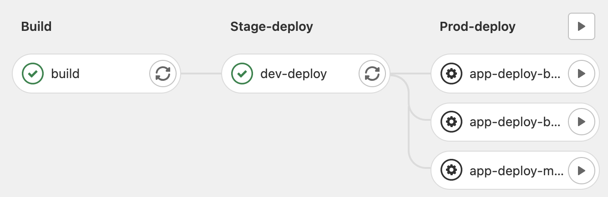 |
| 测试环境 | release_xxx | 开头为 release 的分支 push 时 | 自动 | 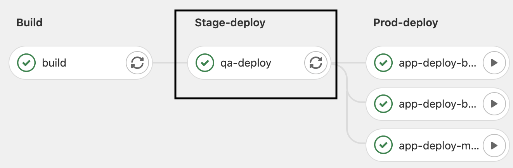 |
| 生产环境 | release_xxx | 手动点击部署操作 | 手动 | 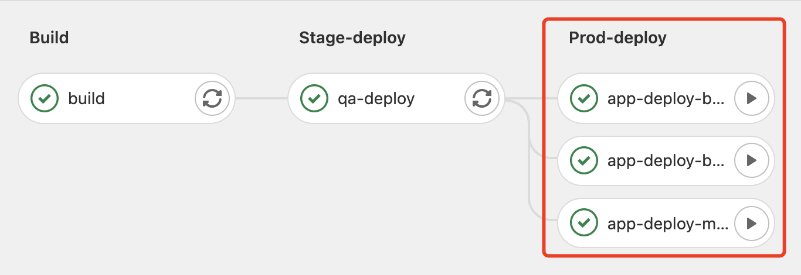 |
核心配置数据维护至 gitlab 中
一些比较敏感的数据，如 token，密码等，可以统一放在 gitlab 中进行维护和管理，并在 CI 脚本中使用该变量。
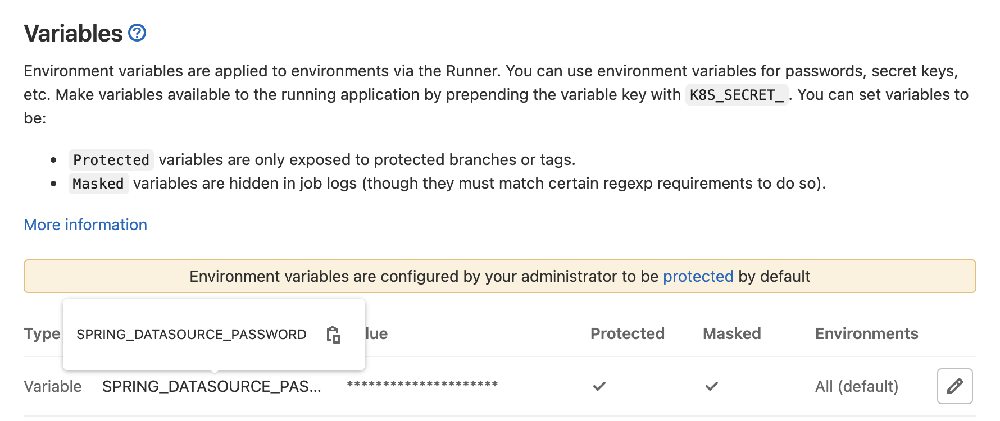
经验总结
- feature 分支的生命周期，越短越好，所有的开发功能需要尽快合并到 dev 分支上，大的功能需要拆成不同的小的 commit 分步骤去合并。
- 每一个 commit 做的事情，尽量独立且简单，这样能够避免掉非常多的冲突。
- 关注开发环境/测试环境 的一些错误，他能让你提前思考生成环境可能出现的 历史数据处理，脏数据问题，NPE 问题等。提前做好预备和思考。
- 不需要提前关注性能（除非是有很明显的 N+1 查询这样的问题），尽量写简单的，可维护的代码。
- 不需要过于执着开发/测试环境和生产一致，因为 生产环境 的流量，访问路劲，数据量都可能是不一样的，与其花很大精力保持一致性，还不如聚焦在业务本身。
- 永远不要去自己上服务器进行修改配置，部署服务等，而是要交给 CI 进行处理。
数据采集
我们的数据来源非常多，可以采集的数据也很多。这里我们将数据分成了三类
- BizLog 业务日志，所有接口请求的日志数据
- SysLog 系统日志，包括服务器的各种指标监控
- AppLog 服务日志，包括服务的 heartbeat，JVM 数据等日志监控
对于上述的日志，都可以采用 ELK 的技术栈进行收集。
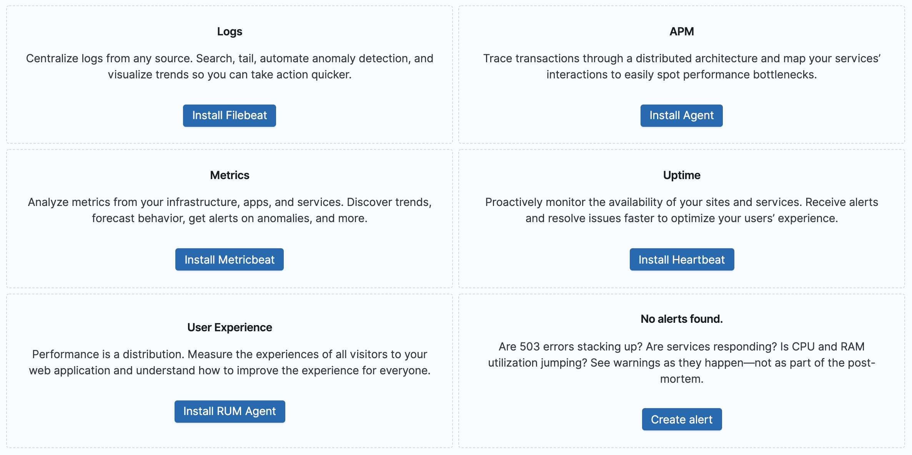
但是实际上 系统日志 和 服务日志，对我们的价值是比较有限的（出现问题的概率相对较小），而且当前的服务都是 Java 的，所以在 系统日志 和 服务日志中我们选择了其他的方式，业务日志使用 ELK 进行收集。
BizLog 业务日志
业务日志为用户访问接口的日志，使用用户接口日志进行分析，相比于直接引入 SDK 到服务的方式，会更加灵活，而且配合着强大的 Logstash 和 Kibana 的报表功能，可以很快地做出非常多的统计数据。
Source
<div class="mermaid" markdown="0">
stateDiagram-v2
s1: BizLog to File
s2: Filebeat to Logstash
s3: format Log then to ES
s4: Kibana Dashborad, Watchers and Alerts
note left of s1
2021-10-29 10:45:03.388<br > INFO : api log, url = /api/adv/detail,<br > params = [{"code":"forYou"}],<br > result = {"body":{"id":1,"img":"aaa"},"code":"200","status":200},<br > time cost = 0 ms
end note
s1 --> s2
note left of s2
message: "2021-10-29 10:45:03.388 INFO : .. result = {...}, time cost = 0 ms"
host: 172.21.16.1
metadata: ...
end note
s2 --> s3
note left of s3
source: ...
requestTime: "2021-10-29 10:45:03.388",
requestUri: "/api/adv/detail",
timeCost: 0,
logLevel: INFO,
host: 172.21.16.1
end note
s3 --> s4
</div>
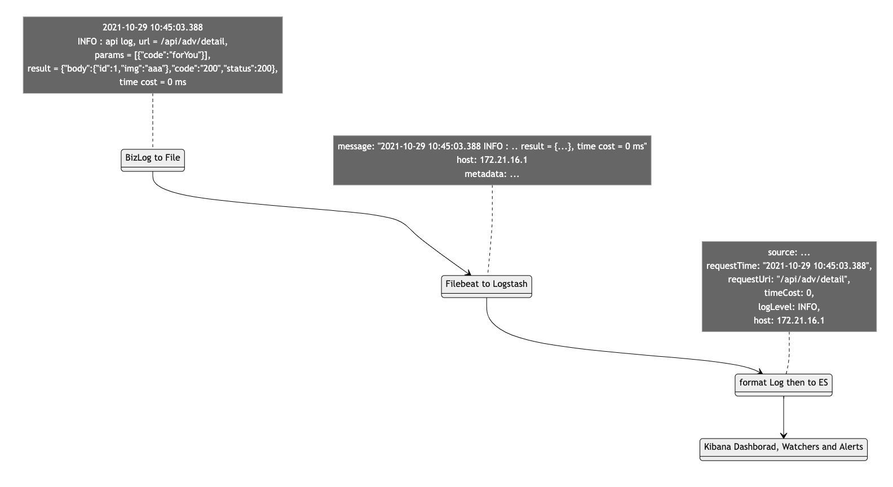
通过 Kibana，我们主要建立了四种维度的数据视图
| 数据维度 | 目的 | 示例 |
|---|---|---|
| 日志源数据 | 日常查询问题 | 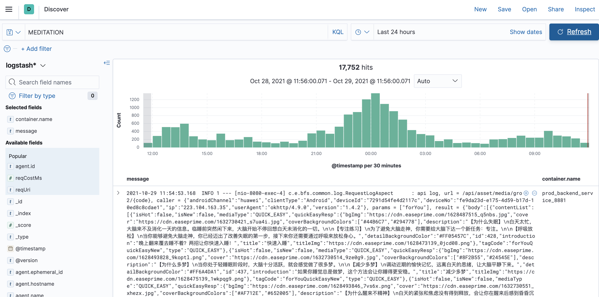 |
| 接口统计 | 建立 SLI/SLO | 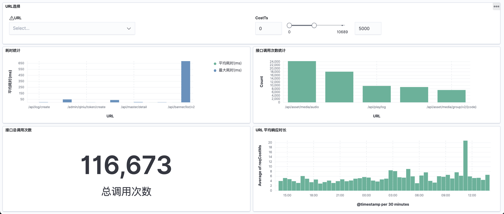 |
| 报警数据 | ERROR/LATENCY/QPS 的报警 | 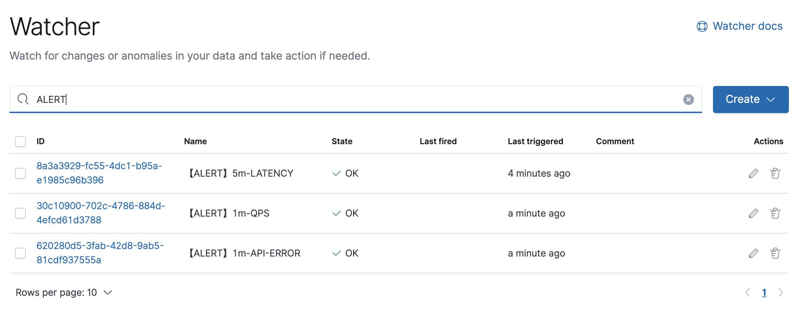 |
| 业务数据 | 某类业务数据监控(如搜索统计等) | 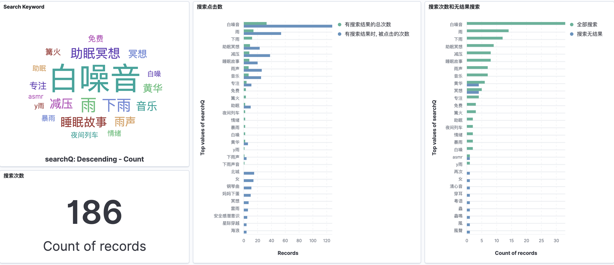 |
SysLog 系统日志
系统日志收集我们使用的是 netdata，如下所示(图片来自官网)

netdata 不仅包括对基本的 CPU，内存 等数据的图形化展示，更包括了 Applications 的资源占用数据统计。
AppLog 服务日志
考虑到我们的核心服务都是 Java 服务， 服务日志收集我们使用的是 Spring Boot Admin
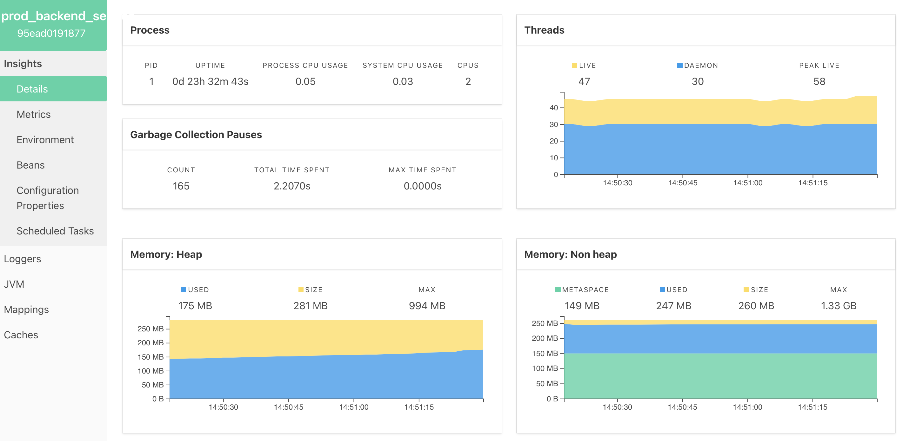
这里可以对最基本的 JVM 数据进行统计，并整合了 Spring 原生的很多特性，并可以支持 dump 线程数据等，对于日常的错误排查已经足够了。
经验总结
- 大多数日志是无用的。正如你的代码大多数时候是看起来没有 Bug 的。
- 关注系统数据，比如系统的 QPS，平均时延，调用链路等。这些数据往往来代表你的业务的健康程度，以及系统是否需要进行改造的判断。
- 谨慎地引入第三方统计组件。统计本身并不复杂，应该将注意力放在核心数据上。
- 日志的处理可能比日志本身更重要。一些核心的字段应该考虑通过 logstash 抽离出来，作为统计需要的核心字段。
报警
业务报警(ERROR/LATENCY/QPS)
在对基础的数据进行了统计之后，结合 ES 的 watcher 功能，可以非常方便地实现报警功能，LATENCY 的例子如下
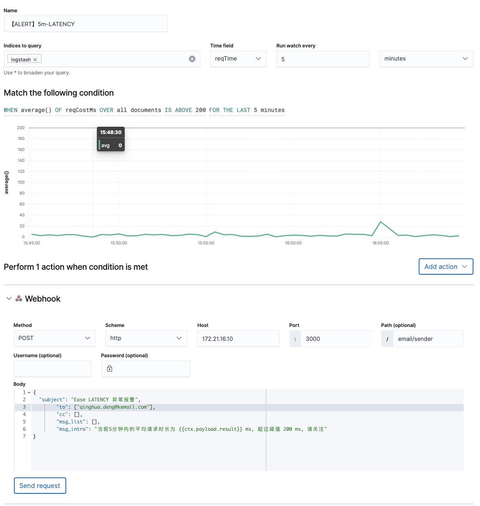
除了上面的基本配置之后，ES 还可以支持非常丰富的查询检索。ERROR 和 QPS 的报警，是通过自定义 input, transform, 并结合 painless 脚本进行报警的。
QPS 在1分钟的阈值检测
{
"trigger": {
"schedule": {
"interval": "1m"
}
},
"input": {
"search": {
"request": {
"search_type": "query_then_fetch",
"indices": [
"logstash"
],
"rest_total_hits_as_int": true,
"body": {
"aggs": {
"urlCount": {
"terms": {
"field": "reqUri"
}
}
},
"size": 0,
"track_total_hits": true,
"query": {
"bool": {
"filter": [
{
"range": {
"reqTime": {
"gte": "||-1m",
"lte": "",
"format": "strict_date_optional_time||epoch_millis"
}
}
},
{
"exists": {
"field": "reqUri"
}
}
]
}
}
}
}
}
},
"condition": {
"script": {
"source": "if (ctx.payload.hits.total >= params.threshold) { return true; } return false;",
"lang": "painless",
"params": {
"threshold": 3000
}
}
},
"actions": {
"webhook_1": {
"webhook": {
"scheme": "http",
"host": "172.21.16.10",
"port": 3000,
"method": "post",
"path": "email/sender",
"params": {},
"headers": {
"Accept": "application/json",
"Content-Type": "application/json"
},
"body": "ctx.payload"
}
}
},
"transform": {
"script": {
"source": """return
['subject': 'Ease QPS 异常统计',
'cc': [],
'to': ['qinghua.deng@email.com'],
'msg_list': ctx.payload.aggregations.urlCount.buckets.stream().map(t -> t.key + ': ' + t.doc_count + '次').collect(Collectors.toList()),
'msg_intro': '1分钟内的接口调用次数: ' + ctx.payload.hits.total + ', 高于阈值: 3000'
]""",
"lang": "painless"
}
}
}
ERROR 在1分钟内的检测
{
"trigger": {
"schedule": {
"interval": "1m"
}
},
"input": {
"search": {
"request": {
"search_type": "query_then_fetch",
"indices": [
"logstash"
],
"rest_total_hits_as_int": true,
"body": {
"size": 1,
"query": {
"bool": {
"filter": [
{
"range": {
"timestamp": {
"gte": "||-1m",
"lte": "",
"format": "strict_date_optional_time||epoch_millis"
}
}
},
{
"term": {
"logLevel": {
"value": "ERROR",
"boost": 1
}
}
}
]
}
}
}
}
}
},
"condition": {
"script": {
"source": "if (ctx.payload.hits.total >= params.threshold) { return true; } return false;",
"lang": "painless",
"params": {
"threshold": 1
}
}
},
"actions": {
"webhook_1": {
"webhook": {
"scheme": "http",
"host": "172.21.16.10",
"port": 3000,
"method": "post",
"path": "email/sender",
"params": {},
"headers": {
"Accept": "application/json",
"Content-Type": "application/json"
},
"body": "ctx.payload"
}
}
},
"transform": {
"script": {
"source": """return ['subject': 'Ease ERROR 报警', 'cc': [], 'to': ['qinghua.deng@email.com'], 'msg_intro': '错误信息: ' + ctx.payload.hits.hits.0._source.message ]""",
"lang": "painless"
}
}
}
系统报警
这里未做系统报警，我们购买的云服务器，所以该部分的报警依赖于 云服务商(腾讯云) 的报警服务。
服务报警
服务的报警是通过 SpringbootAdmin 来做的。SpringbootAdmin 会和 Spring 的应用进行心跳连接，在检测到服务 UP/DOWN 的时候会发出对应的事件。这里配置了简单的邮件报警。
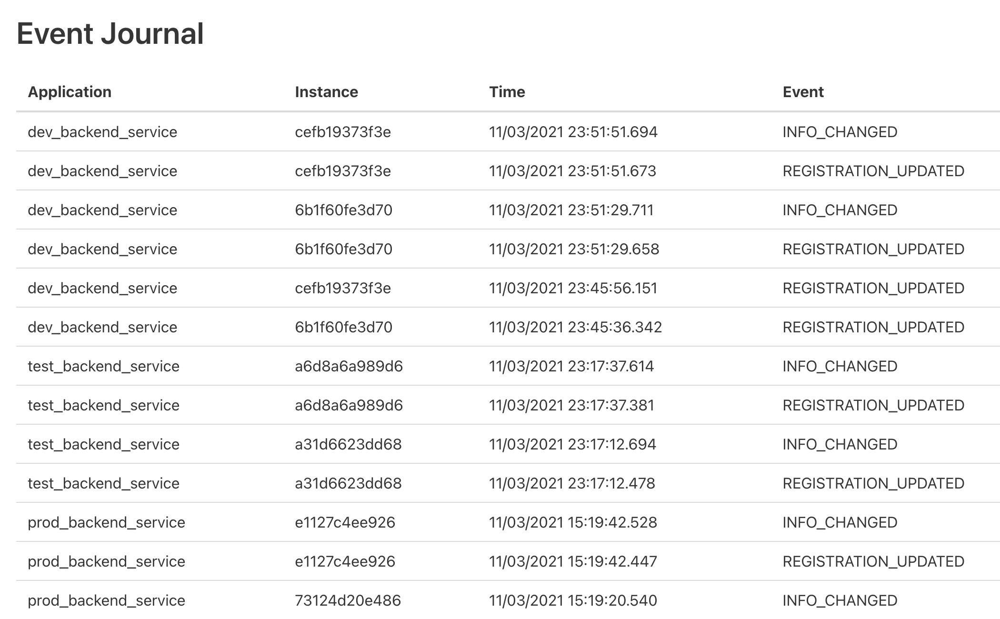
思考
- 报警本身没有业务本身重要，个人理解不需要花太多的时间在上面。
- 及时处理报错信息，不需要处理的报错信息，就应该让他不要报错，报错信息过多会掩盖掉真正的问题。
- 报错维度不在多，而应该是信息简单，仅给出必要的详细信息。
网关
核心功能
作为整个服务顶层的网关，他承载着流量的入口左右，在这一层，我们使用了 Nginx 作为系统的网关。
通过网关，我们实现了下面的功能
- 反向代理
- 负载均衡
- 基础鉴权
- HTTPS
- 压缩/解压
安全
当我们的业务量上升之后，先后遇到了 DDOS，短信接口攻击，挖矿脚本注入等。系统本身的安全变得非常重要，除了购买基础的 云安全服务 之外，我们使用 Nginx 作为网关维度的安全组件。主要包括下面的内容
- 黑白IP名单控制
- 流量控制
- 连接数控制
- 接口调用频次控制
思考
- 在选择网关时，我们遇到一个问题，是否需要引入比较重的中间件/基础设施 ？如 Kong，Gravitee，Tyk 等。大多数的组件都做得非常重，比如 Kong 还需要依赖 PG，本身比较占用资源，使用上必须用 API 才可以操作(Admin 版本需要收费)。
- 而对于当前的业务场景，其实基础的 Nginx 已经满足我们的需求了。而且 Nginx 本身的配置文件可以分开配置，非常好维护和管理，对于小业务反而是一种优势。
- 安全 和 报警一样，是一样性价比不高的系统（但是很重要）尽量做到业务无感知，而且不能伤害到正常用户，这样才能最大地释放业务服务部分的能力，让业务更专注于业务。
业务
在业务架构层设计上，我们使用 BFF + Microservice 的方式，BFF 作为业务端的流量承接入口，Microservice 作为模块化的服务(并不是指业界的大而全微服务体系)
内容
单曲 合集 Q&E 老师等) biz-m3(microservice
支付
微信 支付宝 华为支付 苹果支付) biz-m4(microservice
用户
登录/注册 反馈 VIP信息) biz-m5(microservice
运营活动
广告 Banner 优惠活动) biz-m6(microservice
用户日志
音频播放日志) biz-m7(microservice
RBAC
权限 角色) biz1-->biz11 & biz12; biz11 --> biz-m3 & biz-m4 & biz-m6 biz11 & biz12 --> biz-m1 & biz-m5 & biz-m7
BFF，Backend for Frontend
BFF 层为流量入口, 主要处理 鉴权，参数校验，拼装 microservice 接口中需要的参数，并聚合各个 microservice 的返回结果，我们的缓存也会放在 BFF 层
/tag/media/group/v2/forYou); check(校验参数 获取用户id); biz11(内容
单曲 合集 Q&E 老师等); biz12(用户
VIP信息); biz13(运营活动
广告 Banner 优惠活动); biz14(用户日志
音频播放日志); final(聚合数据) biz1-->check-->biz11 & biz12 & biz13 & biz14-->final;
Microservice
- 这里的微服务并不是业务的微服务，而是模块化的微服务。当前的组织架构，并不需要一个微服务去承接整个系统。此外，团队在微服务的经验和知识储备是不够的。
- 所以这里的微服务只是模块化的微服务，按照 DDD 的思路进行了模块拆分，控制好领域内模型的调用链路，为之后的服务拆分做准备。
单曲 合集 Q&E 老师等) m2(支付
微信 支付宝 华为支付 苹果支付) m3(用户
登录/注册 反馈 VIP信息) m4(运营活动
广告 Banner 优惠活动) m5(用户日志
音频播放日志) m6(RBAC
权限 角色) m7(EventReach
Push 短信 微信消息) m8(搜索) m-->m1 & m2 & m3 & m4 & m5 & m6 & m7 & m8
思考
- 大多数产品可能不需要所谓的微服务的架构。
- 但是微服务的一些概念和思考方式，很值得借鉴。
- 理论上让业务层越简单越好，让业务专注于业务，而不是过多地关注安全，流量，连接等。
- 多关注业务数据，思考业务数据是怎么产生的，并怎么回归到产品中去。
中间件/基础设施
中间件/基础设施 支撑着整个业务系统的运转，他们贯穿在整个系统中。
选择 中间件/基础设施 标准
这里的选择标准包括
- 稳定性高。
- 符合团队的技术栈。
- 运维成本小。
比如我们会选择 Nginx，则不是 Kong，选择 MySQL 而不是其他的数据库。
购买还是自建
我们经常遇到一个问题，MySQL 自建还是购买？ES 可以直接一个命令搭建起来，要不要使用自建的服务？Redis 的部署很简单，要不要自己搭建？
经过思考和讨论之后，有下面几个维度的考虑
- 内部人员使用的系统，不对外开放的，考虑自建，如 BI 系统。
- 面向用户的，涉及到用户数据的，购买。如 MySQL，Redis 等
- 部署和运维成本很高的，购买。如比较吃资源的 ES，部署组件非常多的 Pulsa 队列，我们都进行了购买，直接使用了云服务。
当然，上面也考虑到了灵活性，比如 Nginx，团队内部比较有配置和部署的经验，所以也是使用的自建的 Nginx。
思考
- 无论是引入哪一种组件，购买还是自建，都需要自己先进行一段时间的考察和试用，横纵向进行多维度的对比之后，再做一些考虑。
- 维护好重要的数据，并进行备份。
- 内部使用的中间件/基础设施 尽量要和用户使用的系统分开。比如 BI 使用的 MySQL，我们则购买了一个从库，专门给 BI 进行使用。